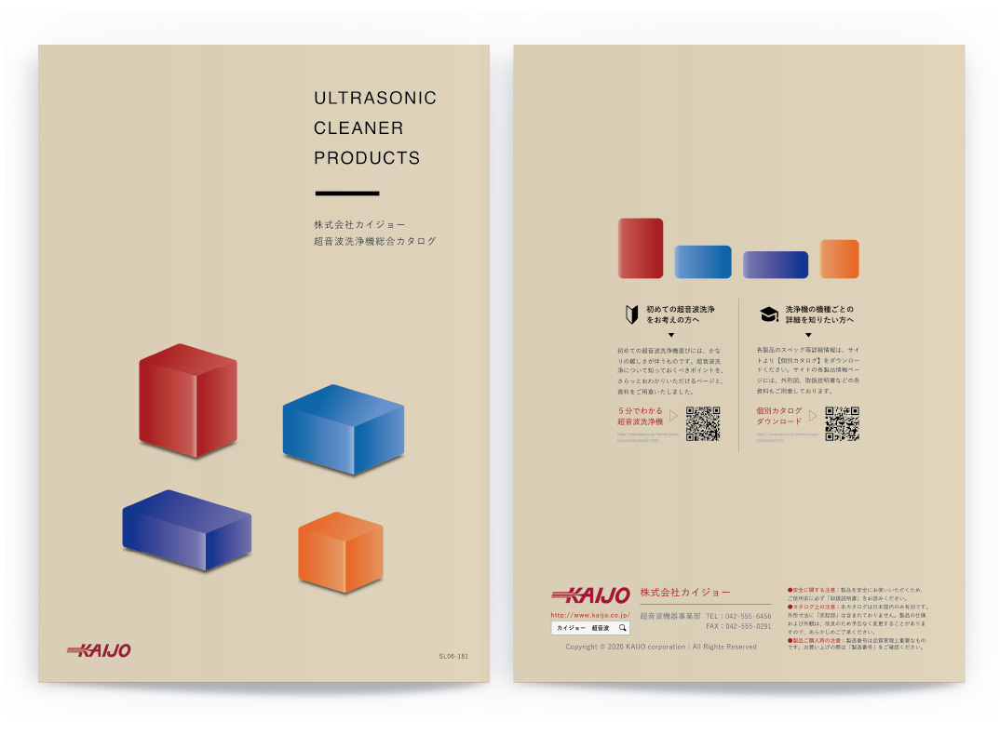
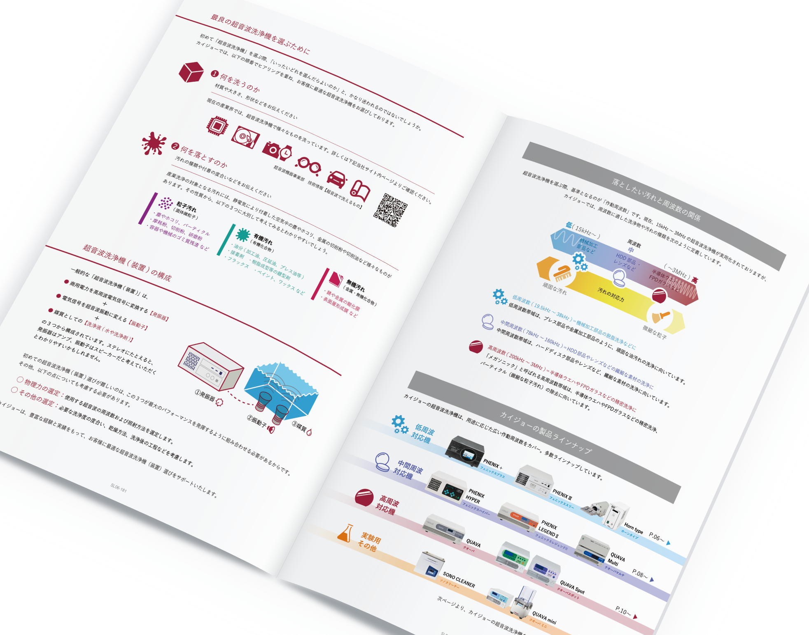
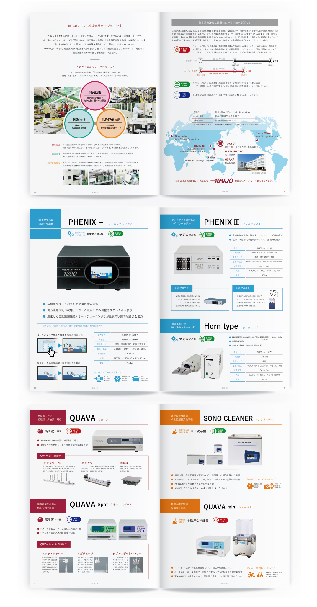

カイジョー
株式会社カイジョー
カタログ
2020. 08



カタログ
2020. 08
株式会社カイジョーの超音波洗浄機部門の製品カタログ。
超音波洗浄機器のほとんどは半オーダーメイド品であるため、今までの全てを詰め込み過ぎていたものから一新して、ライトな情報のみを羅列し、お問い合わせへ誘導する形のものを制作。また、そのためあまり突出して推す製品というものが無いことから、様々な機器を感じさせる直方体のイラストをフラットな様相で配置し、表紙としました。
＜ BACK
© Moeri Ito